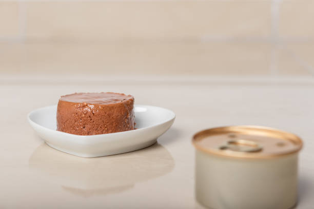

Food For My Cat

Ingredients:
- 1 can of Hills Prescription Diet c/d for Urinary Care
- 1 reusable sillicon can lid
- 1 bowl, preferably with a low rim, as befits His Majesty
Steps:
- Open the can
- Scoop 1/2 of the can into the bowl
- Seal the can with the lid, then refrigerate leftovers
- Serve the bowl on a raised surface, for privacy from dogs